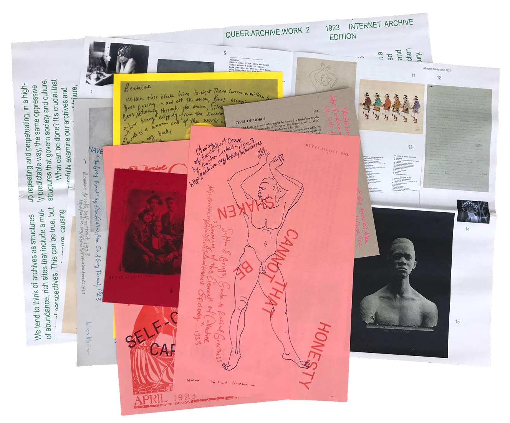
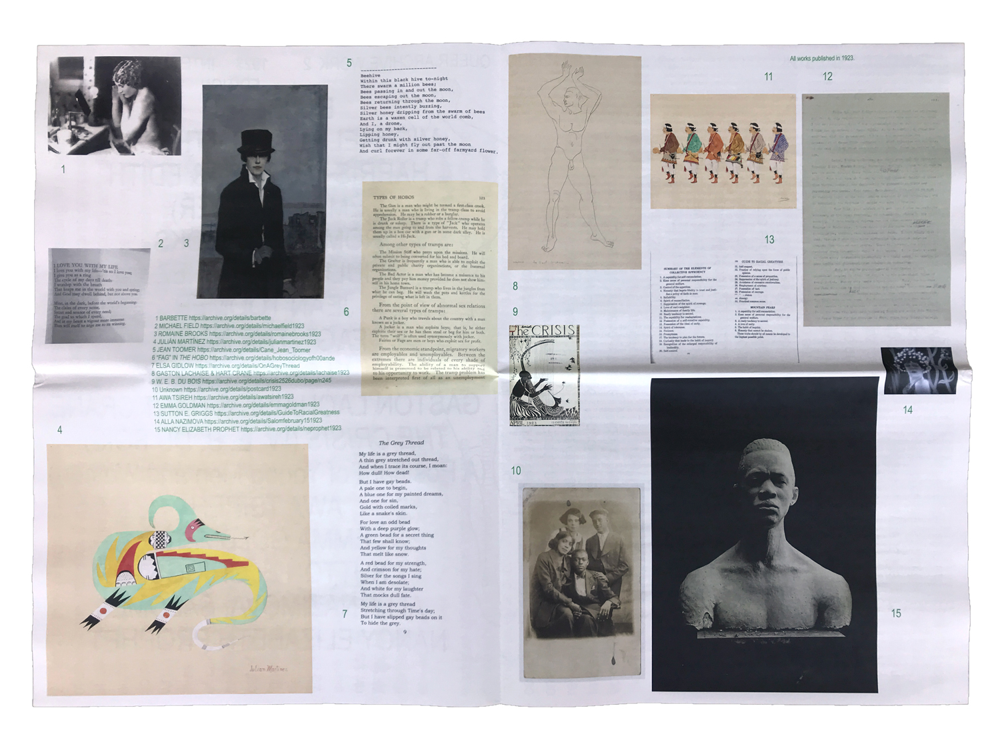
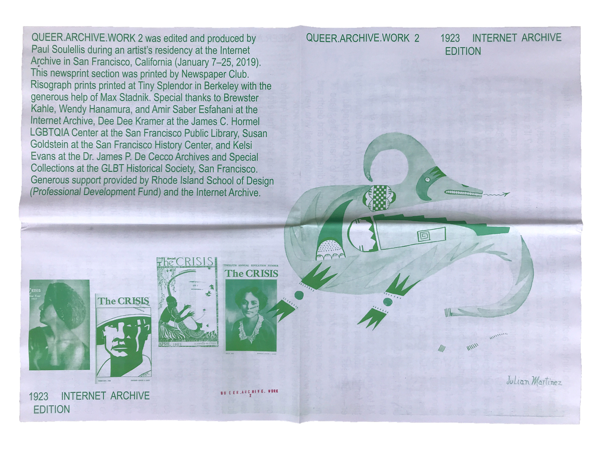
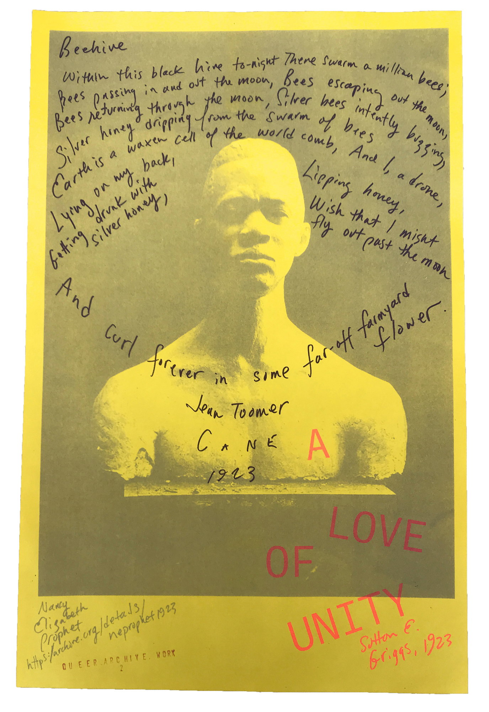
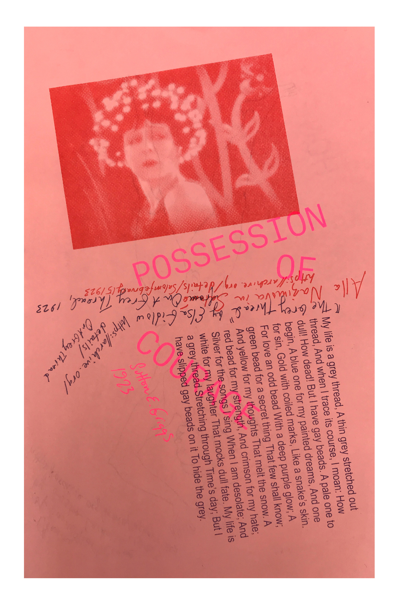

QUEER.ARCHIVE.WORK 2 (1923 INTERNET ARCHIVE EDITION)
QUEER.ARCHIVE.WORK 2 (1923 INTERNET ARCHIVE EDITION) was installed in a special reading room at the Internet Archive in San Francisco on January 25, 2019. Printed as an edition of 100, the publication is a newsprint catalogue enclosing a set of annotated risograph prints, allowing lesser-known material from 1923 to intermingle in a loose assemblage. Artifacts include rare, historical LGBTQ content that has been digitized for the first time, and works by African American and Native American artists and writers. All items were originally published in 1923 and are in the public domain as of January 1, 2019. QUEER.ARCHIVE.WORK 2 was edited and produced by Paul Soulellis while artist-in-residence at the Internet Archive (January 7–25, 2019), and was part of the Archive’s celebration of the newly-expanded public domain.

QUEER.ARCHIVE.WORK 2 (1923 INTERNET ARCHIVE EDITION)
Contents—
A photograph of Barbette, 1923
A poem by Michael Field (Katherine Harris Bradley & Edith Emma Cooper), 1923
A self-portrait by Romaine Brooks, 1923
A painting by Julián Martínez, 1923
A poem from Cane, by Jean Toomer, 1923
A page from The Hobo, featuring the first appearance of fag in print, 1923
A poem from On A Grey Thread by Elsa Gidlow, 1923
A drawing of Hart Crane by Gaston Lachaise, 1923
1923 covers of The Crisis, edited by W. E. B Du Bois
A postcard of young men and women, unknown photographer, 1923
A painting by Awa Tsireh, 1923
A 1923 letter from Emma Goldman to Magnus Hirschfield
An excerpt from Guide to Racial Greatness by Sutton E. Griggs
A still image of Alla Nazimova from Salomé, 1923
A 1923 photograph of an artwork by Nancy Elizabeth Prophet



QUEER.ARCHIVE.WORK 2 (1923 INTERNET ARCHIVE EDITION)
Talk delivered at the Internet Archive, San Francisco on January 25, 2019 for “A Grand Re-Opening of the Public Domain,” hosted by Internet Archive and Creative Commons:
We tend to think about archives as places of deep abundance. Rich sites that house a multitude of perspectives. This can certainly be true, but archives are also sites of erasure, allowing some voices to be amplified while others are minimized or excluded when they don’t fit into normative narratives.
Traditionally, stories involving people of color, queer people, and other historically-marginalized voices have been left out of archives, or diminished, because of ignorance, homophobia, and racism.
Histories aren’t “discovered” in archives; rather, we use archives to actively construct versions of history, stories that accommodate our own subjectivities and ideologies. All too frequently, these stories favor the familiar structures of oppressive power—whiteness, patriarchy, and capitalism.
Likewise, the public domain is a remarkable construction that allows us to define who is or isn’t included in normative narratives. The public domain proclaims certain material as property owned by no one; cultural material in the public domain, theoretically, belongs to everyone. As copyright law enables new content to enter the public domain each year, it’s important to look closely at which voices are amplified in the celebration of open culture. There is no actual public domain. There is no site or territory or designation that reflects an authentic condition of making public.
Rather, it’s a legal status created by those who control access. The institutions that define the public domain—museums, libraries, courts, archives like this one—give (or deny) access to these materials that have been designated as open and available.
But as an institutional construct, the public domain can easily fail to reflect any true nature of “the public;” without careful consideration, access to the public domain ends up repeating and perpetuating, in a highly predictable way, those same oppressive structures that govern society and culture.
So what can be done? It’s crucial that we carefully examine our archives and search for lost voices, stories of failure, non-linear trajectories, and other non-conventional perspectives.
We must refuse to accept traditional timelines at face value, and work to amplify marginalized material that has otherwise gone unnoticed, or erased.
When confronting an archive or any presentation of historic cultural material, it’s irresponsible not to ask urgent questions like: What is this content’s relation to power? Who has been excluded? Who else should be included here in order to better understand the material at hand?
Once engaged, we can actively work to change the shape of history, giving it dimension and depth and greater representation for all who were involved. This is what I call queer archive work.
I’m really grateful to the Internet Archive for inviting me to help shape their effort to present newly available material in the public domain. During my residency here, for the last 3 weeks, I’ve been searching archive.org for this forgotten material—in particular, evidence of African-American culture, Native American culture, early LGBTQ voices, and other artifacts from 1923 that in the past would have been forgotten or actively left out of celebrations like this one today.
If something seemed to be missing, I tried to find it elsewhere and upload it to archive.org—many of the items you’ve just seen were uploaded by me in the last two weeks. Remarkably, I found the very first openly lesbian book of poetry ever published, by the Bay area poet Elsa Gidlow, in 1923.
It’s titled On A Grey Thread. It’s a rare book, and it had never been digitized. But I was able to find the author’s original copy of the book here in her papers in San Francisco, in the GLBT Historical Society Archive. They put me in touch with the Elsa Gidlow’s estate, and they sent a PDF for me to upload. So the entire book is now online, as of a few days ago.
The result is this publication, which includes all of the artifacts you’ve just seen, with Wikipedia descriptions and an essay by me. I’m very proud that the Internet Archive helped me to produce this. QUEER.ARCHIVE.WORK 2 (1923 INTERNET ARCHIVE EDITION) is being distributed here today. It’s an edition of 100 copies that I edited, designed, and printed myself at Tiny Splendor, a small press in Berkeley.
All of the items I found are now available on archive.org. By bringing these almost-forgotten artifacts together in the form of a publication, my hope is to create a place for voices and positions to co-mingle. It’s a collection made possible by the Internet Archive, and by printing it—I’m slowing the material down for you to get a closer look.
I think by doing more of this work, we can challenge what we think we know about the early years of the 20th century, and imagine other kinds of histories. In our current political climate, where our relationship to truthful information is precarious, to say the least, I see this work as a tactical form of resistance. It’s barely a scratch in the surface of history, but it makes a difference. And we need to do much, much more.
Paul Soulellis